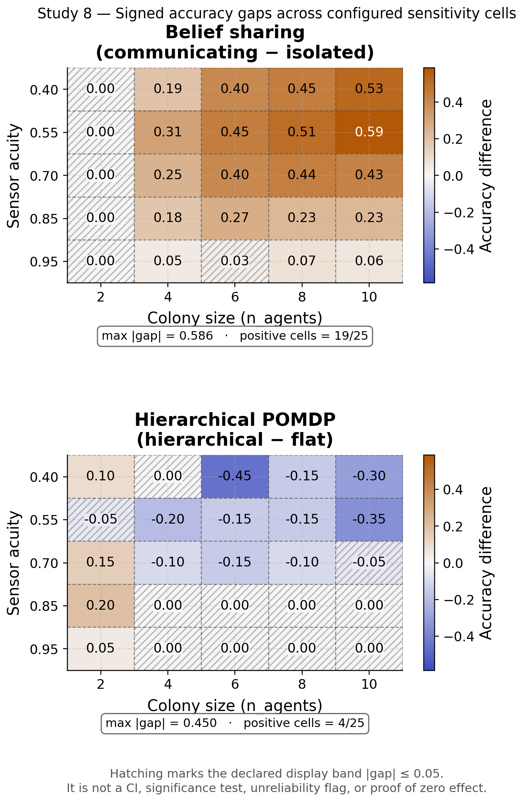
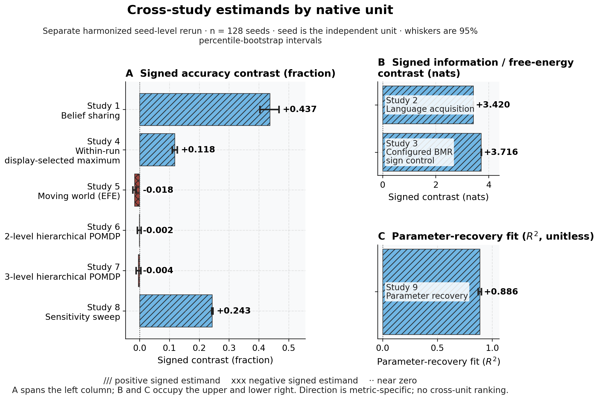

Parameter sensitivity of federation benefit
Studies 1–7 fix specific parameter configurations (sensor acuity, colony size) to isolate mechanistic claims. A natural question is whether the federation benefit is robust to those choices or is an artifact of a narrow operating point. Study 8 addresses this with a systematic 2-D sensitivity sweep over sensor acuity and colony size.
We sweep sensor acuity \(\kappa \in \{0.40, 0.55, 0.70, 0.85, 0.95\}\) and colony size \(n \in \{2, 4, 6, 8, 10\}\), evaluating two systems:
- Belief sharing (Study 1 architecture) — accuracy gap = communicating minus isolated mean accuracy;
- Hierarchical POMDP (Study 6 architecture) — accuracy gap = hierarchical minus flat location accuracy.
Each cell averages \(n_{\text{trials}} = 20\) independent trials to reduce Monte-Carlo noise at the cell level.
The resulting heatmaps (Figure 26) show the accuracy gap for both systems as a function of acuity and colony size. Green cells indicate that federation benefits the colony; red cells indicate that the chosen configuration yields no benefit or a slight deficit. The symmetric RdYlGn colormap is centered on zero so the sign of the benefit is immediately legible.
Across the grid the following patterns hold:
The belief-sharing benefit lives at low-to-moderate acuity. The accuracy gap peaks in the second-lowest acuity row — where individual observations carry some signal but no single sentinel resolves the location alone, so pooled evidence pays most — and remains uniformly positive across the two lowest-acuity rows for colonies of at least four agents. Near ceiling acuity the gap shrinks toward zero: single agents already solve the task, so federation has nothing left to add.
Colony size acts through a floor, not a smooth slope. The two-agent column shows an exactly zero belief-sharing gap at every acuity: under self-exclusion (“agents do not hear themselves”), each member of a two-agent colony hears exactly one incoming belief, so the heard consensus adds no pooled evidence. Colonies of four or more realize the low-acuity benefit.
The hierarchical gap is near zero across most of the grid. The hierarchical-minus-flat location-accuracy gap is approximately zero over most cells, with a few strongly negative low-acuity cells and small positive cells confined to the two-agent column — consistent with the per-study finding that the hierarchical architecture matches rather than beats the flat baseline on location accuracy.
The full parameter grid and protocol details are in the supplement (Section 13.14). A native-unit cross-study overview of the headline metrics across all 9 studies is shown in Figure 27.

